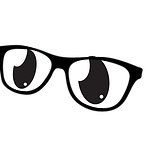
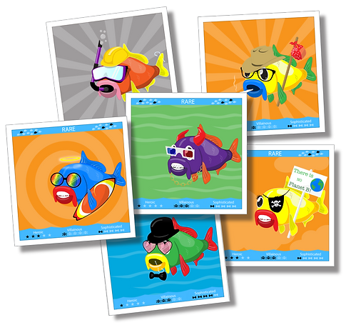

Big Ugly Fish are a school of 10,000 Collectable Carp, programmatically generated from 100+ pieces of hand-created artwork.
Rarity and Special Attributes are computed programmatically at the time of creation and automatically stamped onto each collectible card.
Proceeds go to Environmental Protection through donations to multiple Charities and Non-Profits.
Owners of Big Ugly Fish nominate Charities and determine where donations are distributed.
